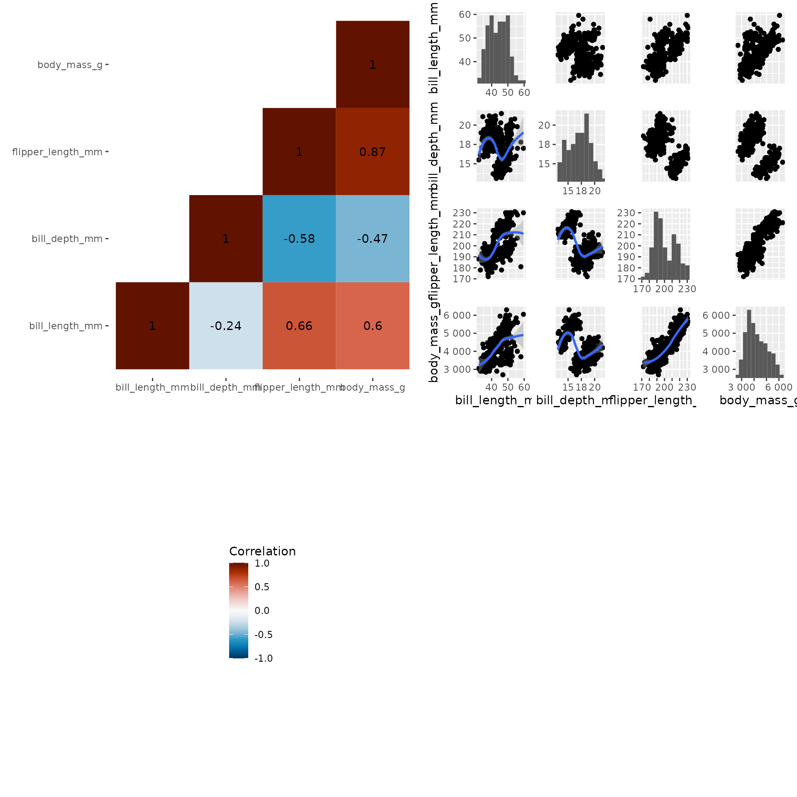

Composing
composing.RmdSubplots are laid out based on patchwork::wrap_elements(). The obtained subplot can be embedded in another layout:
library(pairplot)
library(ggplot2)
library(reshape2)
penguins_url <- "https://raw.githubusercontent.com/allisonhorst/palmerpenguins/main/inst/extdata/penguins.csv"
columns <- c("bill_length_mm", "bill_depth_mm", "flipper_length_mm", "body_mass_g")
penguins <- read.csv(penguins_url)[columns]
penguins <- penguins[!apply(is.na(penguins), 1, any), ] # dropping NA
penguins_corr <- cor(penguins)
penguins_corr[upper.tri(penguins_corr)] <- NA
penguins_corr <- reshape2::melt(penguins_corr)
corheatmap <- ggplot(penguins_corr,
aes(x = Var1, y = Var2, fill = value)
) +
geom_tile() +
labs(fill = "Correlation") +
# scale_fill_brewer(type="div") +
colorspace::scale_fill_continuous_divergingx(palette = 'RdBu', rev = TRUE, mid=0, limits=c(-1, 1), na.value="white") +
geom_text(aes(Var1, Var2, label = round(value, 2))) +
theme(
axis.title.x = element_blank(),
axis.title.y = element_blank(),
panel.background = element_blank(),
)
p <- corheatmap + pairgrid(
penguins,
map_lower=pair_geom_smooth,
map_diag=pair_geom_histogram,
map_upper=pair_geom_point
)
#> Warning: Ignoring unknown parameters: unit_y
#> Ignoring unknown parameters: unit_y
#> Ignoring unknown parameters: unit_y
#> Ignoring unknown parameters: unit_y
#> Ignoring unknown parameters: unit_y
#> Ignoring unknown parameters: unit_y
p
#> Warning: Removed 6 rows containing missing values (geom_text).
The left plot legend “squashes” the right plot, which adapt to rectangles. To avoid this behaviour, one method is to “collect” the plots using [patchwork::guide_area()].
library(patchwork)
p + guide_area() + plot_layout(ncol=2, guides="collect")
#> Warning: Removed 6 rows containing missing values (geom_text).
corheatmap + theme(legend.position="top") + pairgrid(
penguins,
map_lower=pair_geom_smooth,
map_diag=pair_geom_histogram,
map_upper=pair_geom_point
) + guide_area() + plot_layout(ncol=2, guides="collect")
#> Warning: Ignoring unknown parameters: unit_y
#> Ignoring unknown parameters: unit_y
#> Ignoring unknown parameters: unit_y
#> Ignoring unknown parameters: unit_y
#> Ignoring unknown parameters: unit_y
#> Ignoring unknown parameters: unit_y
#> Warning: Removed 6 rows containing missing values (geom_text).